iQOO Hackathon 2026 · Pune City Battle · Working professionals
Camera-verified effort becomes damage against a boss. Pose estimation, form scoring, a fatigue model and a language model all run on the phone — and nothing ever leaves it.
clash-fit.vercel.app
The problem
Every fitness app counts what you tell it. Tap ten, it logs ten. There is no sensor in that loop — only a text field and your honesty at the exact moment you are least able to judge yourself.
What the app knows
“10 squats”
A number you typed. No depth, no range, no tempo, no alignment, no idea whether rep 9 looked anything like rep 1.
What actually happened
10 reps. 4 of them shallow.
Depth fell 4 cm across the set. Descent got faster as control went. The knee drifted inside the toe on the last three.
The gap between those two boxes is the entire product.
How it works
A half-rep buys nothing. That is the whole design: the only way to do more damage is to move better, and the phone is the thing deciding whether you did.
What “graded” means
A rep is not a count. It is four quantities the camera can measure, weighted per exercise — depth matters more in a squat than tempo does.
| 0.40 | Depth in real centimetres, scored superlinearly |
| 0.25 | Range against your own first three reps |
| 0.20 | Tempo — the eccentric, where reps get cheap |
| 0.15 | Alignment — knee over toe, hip above shoulder |
That score becomes damage on a curve. A clean rep takes three hundred off the boss; a shallow one takes almost nothing. The only way to win is to move better.
Weights from config/exercises/squat.json · curve from config/combat.json
The differentiator
Velocity, range and the pauses between reps, measured every rep against your own first three. Not a difficulty slider. Not a self-reported effort rating. The point at which the movement actually changed.
Thirteen reps to failure · produced by the shipping engine · node test/replay.js traces/synthetic-f3-to-failure.jsonl
One model, five shapes of movement
Fatigue is not one signal. Each family of movement degrades in its own way, so each has its own weighted signals feeding the same estimator and the same four bands. That is what lets one engine cover yoga, cardio, holds, jumps and reps.
| Family | Exercises | Game | How fatigue shows up | |
|---|---|---|---|---|
| REP_CYCLE | 10 | Boss Fight · strength reps | Velocity decay 0.45 · range decay 0.35 · growing pauses 0.20 | |
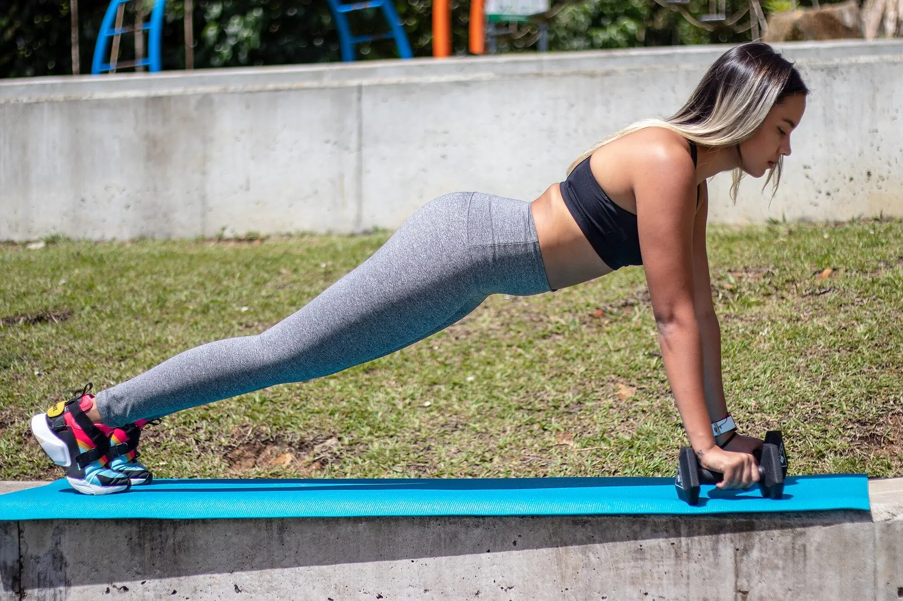 | ISOMETRIC_HOLD | 9 | Siege · your plank is the shield | Tremor growth 0.60 · quality decay 0.40 |
| POSE_MATCH | 14 | Sigil · each asana a constellation | Accuracy drift 1.00 | |
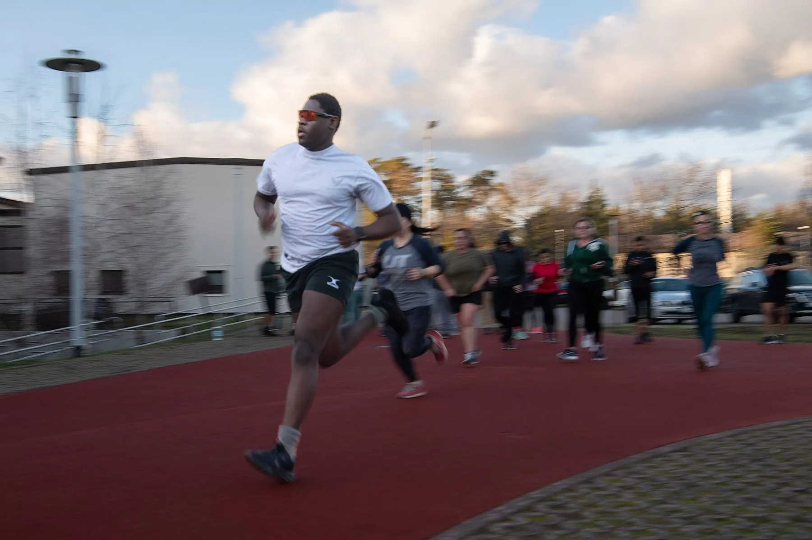 | CADENCE | 11 | Pursuit · distance is cadence | Cadence decay 0.55 · amplitude decay 0.45 |
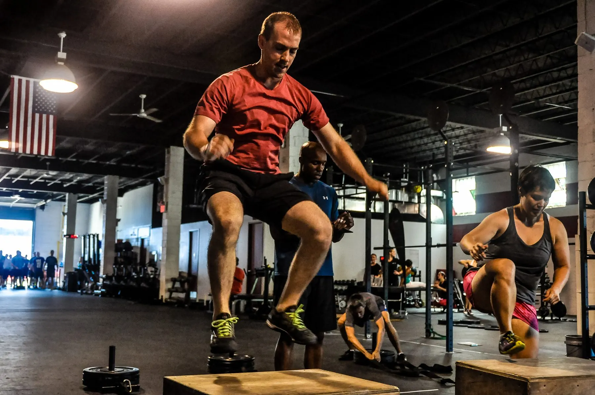 | BALLISTIC | 7 | Breaker · jump height in centimetres | Height decay 0.60 · landing softness 0.40 |
Every screen
Boss fights, holds, yoga, cardio, a race against a file, a streak and a clinical test — the same engine, the same phone, eight of the sixteen shown here.
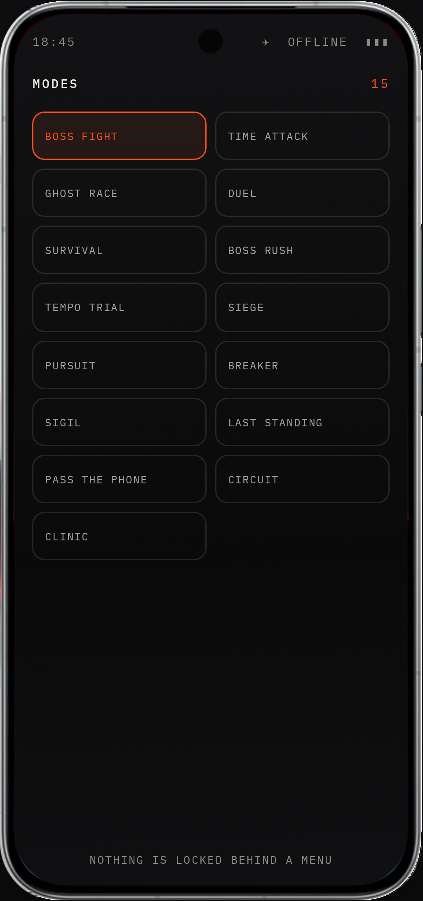
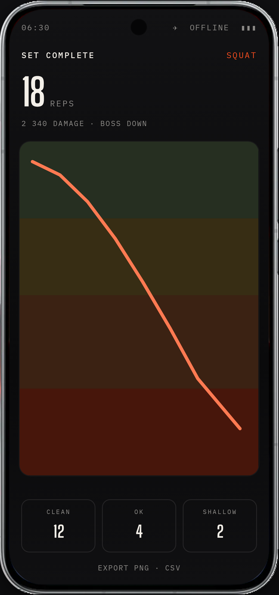
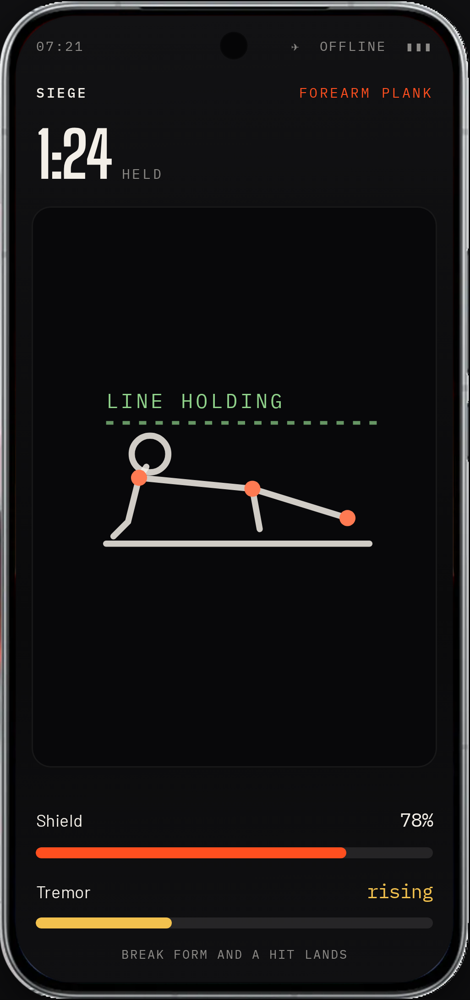
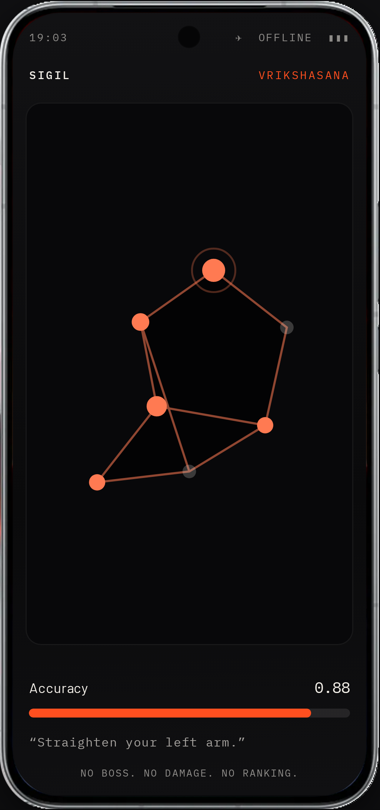
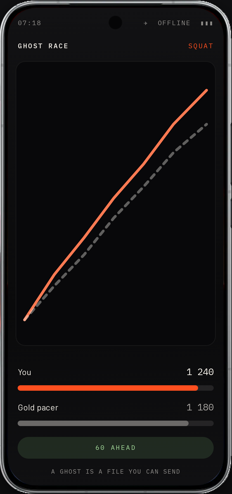
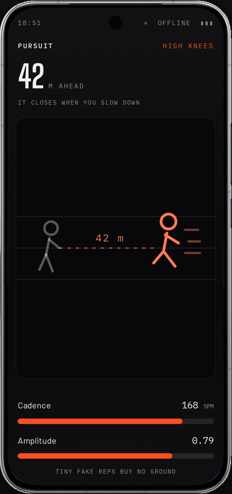
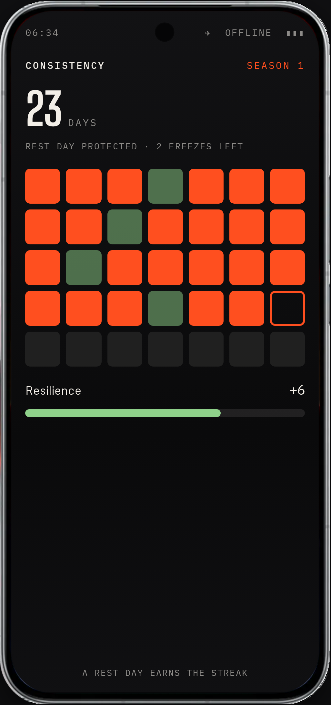
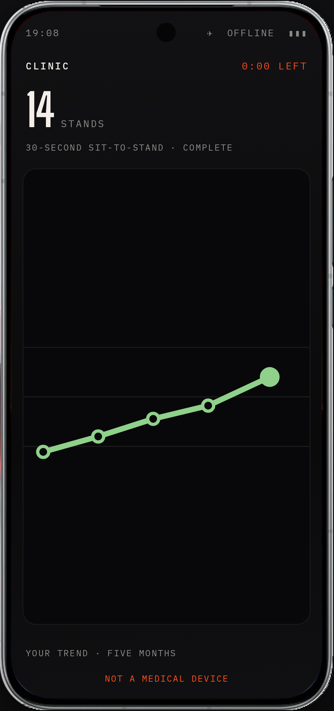
Multiplayer
Phones exchange events, not state. Boss HP is a pure function of the deduplicated union of every damage event either phone has seen, so the two screens converge without any authority deciding who is right.
bossHp = maxHp − Σ damage over dedupe(union)
Every message carries a self-healing tail of the last eight events, so a dropped packet repairs itself on the next one. No acknowledgements, no retransmit logic, no clock sync — and it works in airplane mode.
The on-device model
Between sets — never during one — a twenty-three-field summary of what your body just did goes to Gemma 3n, running on the phone. It writes the coaching and it writes the taunt. It never sees a frame of video, because we never send it one.
| Goes to the model | Never goes |
|---|---|
| Rep count, form means, first-three vs last-three | Video |
| Depth in centimetres, and how much of it you lost | Images |
| Velocity loss, range loss, fatigue band | Landmarks |
| Best and worst rep, combo, boss HP, rest seconds | Audio |
| Bilateral deficit, and which side is weaker | Identity |
Every field enumerated in src/coach.js · summarise()
“Your last three reps lost four centimetres of depth. Take forty seconds, then finish it.”Coach
“Your knees are negotiating.
I don't
negotiate.”The Pacemaker
And when the model is wrong, it does not speak. A validator checks every sentence against the telemetry it was given. A line that cites a number we did not measure is dropped, and a template bank keyed on the same numbers speaks instead. The athlete never hears a hallucination.
Privacy
Pose, form scoring, fatigue and the language model all run on the phone. No frame of video, no landmark and no form score has ever left a device, and none can — in any mode. Outbreak is the single mode that uses the network, because a map is tiles from a server. It asks for location when you start it, never at install, and it never opens the camera. An account is optional and carries four things — a display name, a level, an XP total and a best streak. Not your email, and never a rep.
Everything in the app
Sixteen modes
| Boss Fight | Strength reps |
| Time Attack | Sixty seconds |
| Survival | Waves |
| Boss Rush | Three in a row |
| Tempo Trial | Eyes-free |
| Ghost Race | Your own best |
| Siege | Holds |
| Sigil | Yoga, 14 asanas |
| Pursuit | Cardio |
| Breaker | Jumps |
| Circuit | All five families |
Together, in real time
| Duel | Two phones |
| Raid | Three to eight |
| Team vs Team | Two bosses |
| Last Standing | Fatigue knockout |
| Pass the Phone | One device |
| Outbreak | Outdoors, on a map |
A live leaderboard on every screen in the room, ranks and damage moving as people move. No server, no internet needed.
Clinic
| Sit-to-stand | Thirty seconds |
| Balance and reach | Monthly |
| Left against right | Every set |
Not a game at all
| Wake-up alarm Stops only when the reps are done |
| App budget Paid off in movement |
| Desk timer Sixty seconds every fifty minutes |
| Posture score Frames read, then discarded |
| Guided breathing Verified, not assumed |
| Run tracker Route never leaves the device |
Kept for you
| Levels · XP earned from rep quality |
| Leaderboards global and friends, real-time |
| Weekly challenge same for everyone, Monday |
| Badges bronze, silver, gold |
| Session summary, exportable |
| Streaks that count rest as training |
| Fatigue history across months |
Outdoors · the one mode that goes online
Outbreak puts the chase on a real map. A sixty-second head start, then pursuers spawn around you and begin closing. Ammo caches sit at real coordinates. Get within twelve metres of a pursuer and it has you.
A pursuer closes when your cadence drops, not only when your coordinate stops. The same detector that runs Pursuit indoors decides whether you are still running — which is why walking it does not work.
And it is the one mode that asks for the network. A map is tiles from a server. Outbreak requests location when you start it, never at install; declining costs you exactly this mode. The camera stays shut throughout, so no frame leaves the device here either, and the route is stored on the phone.
Why this phone
The 32 MP front camera's ninety-degree field of view holds a whole standing body from about two metres — the distance a bedroom gives you. A narrower selfie lens crops your feet, and a rep the camera cannot see is never counted.
Pose on the GPU delegate leaves the CPU free for the rep machine, the fatigue model and the fight inside one frame's budget — then the same silicon runs a language model between sets with the radio off.
Twelve minutes of continuous camera, GPU and screen is a thermal problem, not a peak one. A 7000 mAh cell and iQOO's 8K vapour-chamber cooling are what keep the frame rate from sagging halfway through and taking the fatigue baseline with it.
The multiplayer story needs a second phone and nothing else. No server, no router, offline-first.
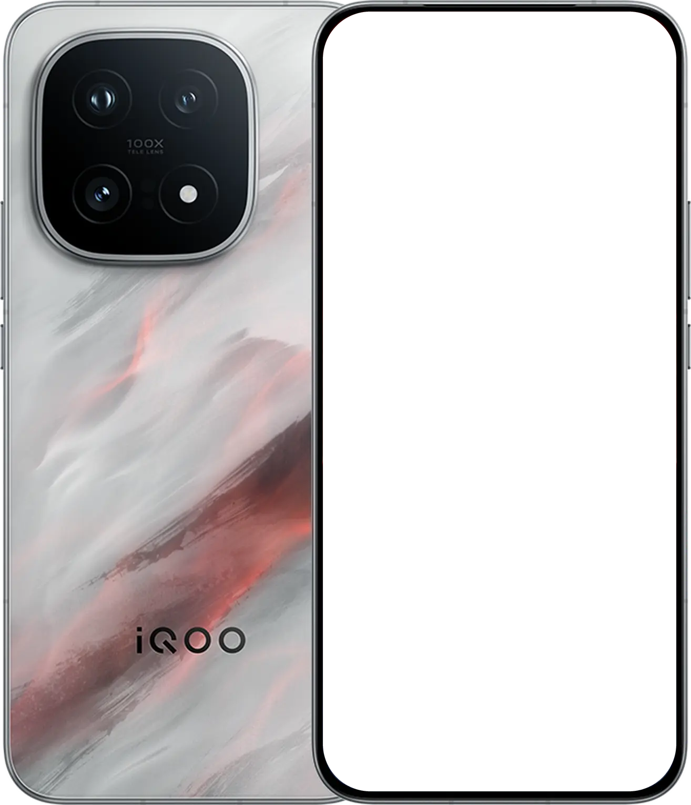
Specifications cross-verified against iQOO's own product pages, GSMArena and the chip vendor. Nothing on this slide is quoted from a spec we could not source twice.
Beyond the game
Bilateral asymmetry
Pose gives a left knee and a right knee. Every app averages them and throws the difference away. The Limb Symmetry Index is a measure clinicians use, and no consumer fitness app reports it — none of them can see both sides.
LSI = weaker / stronger × 100
Graded for confidence, because a side-on camera foreshortens the far limb and will invent an asymmetry that is not there.
Clinic mode
The thirty-second sit-to-stand is a published, validated test of lower-limb strength — counted by a human with a stopwatch, once or twice a year. The camera counts it correctly at home, as often as you like, and plots the trend the annual version can never show.
14Stands in 30 seconds
A measurement, not a diagnosis — and the language validator enforces that.
Five health tools
| Alarm you cannot dismiss from bed |
| App budget paid off in reps |
| Desk timer — 60s every 50 min |
| Posture score — frames read, then discarded |
| Breathing, verified from chest motion |
Nothing here uploads. Nothing here is a diagnosis.
It already runs
$ node test/replay.js traces/…
13 reps · fatigue 0.63 · GASSED · MERCY FIRED
The fatigue curve three slides back is that command's output. Tests cover the rep machine, the form scorer, the fatigue estimator, the duel sync and the page's own claims — the build fails if the site prints a number the config does not hold.
Team Da Goats
Android & perception
The camera path, the pose pipeline and the detector families — everything between a frame arriving and a rep being counted.
Game systems & inference
The combat model, the multiplayer sync and the on-device language model — everything between a rep being counted and it meaning something.
Prop your phone.
Fight it out.
clash-fit.vercel.app